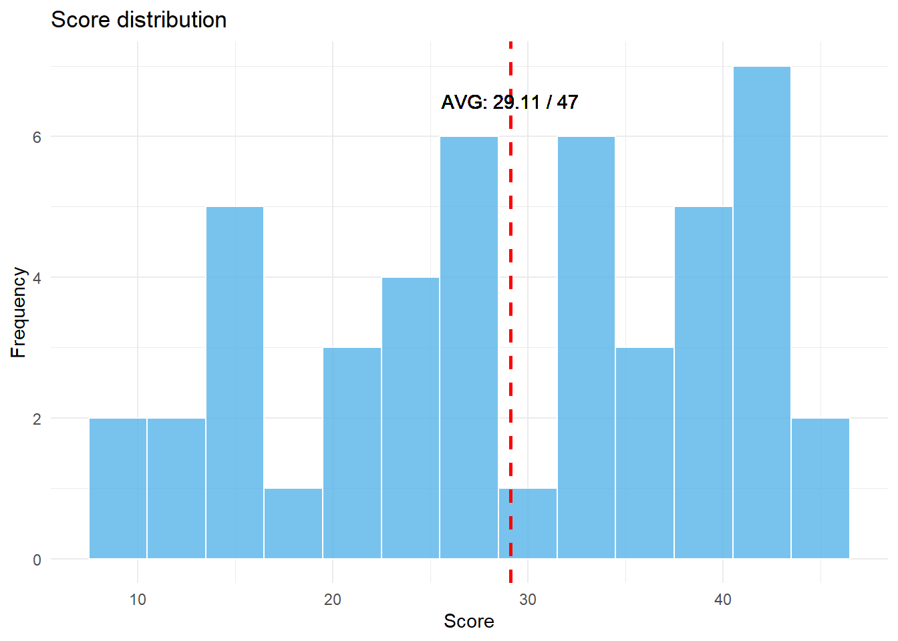
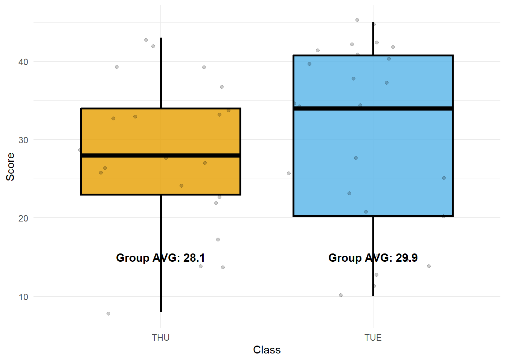
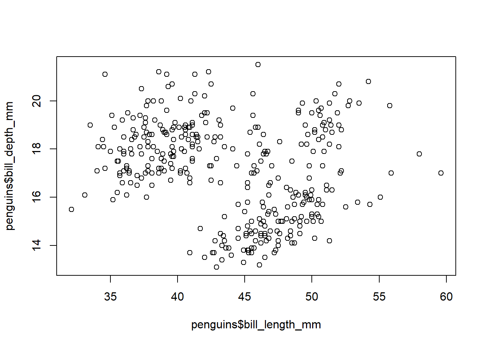
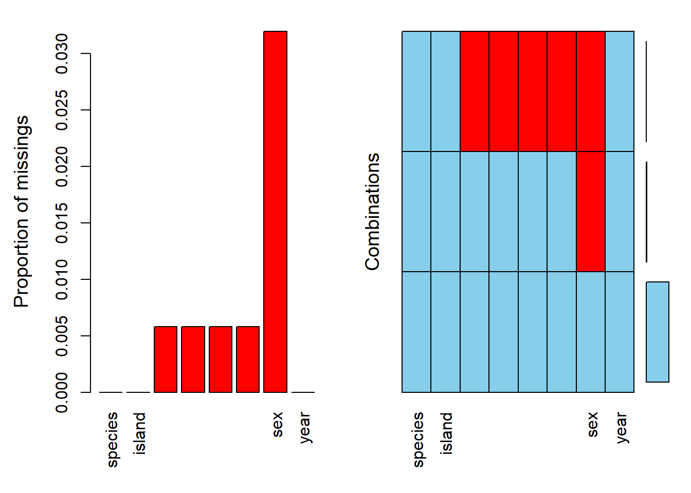
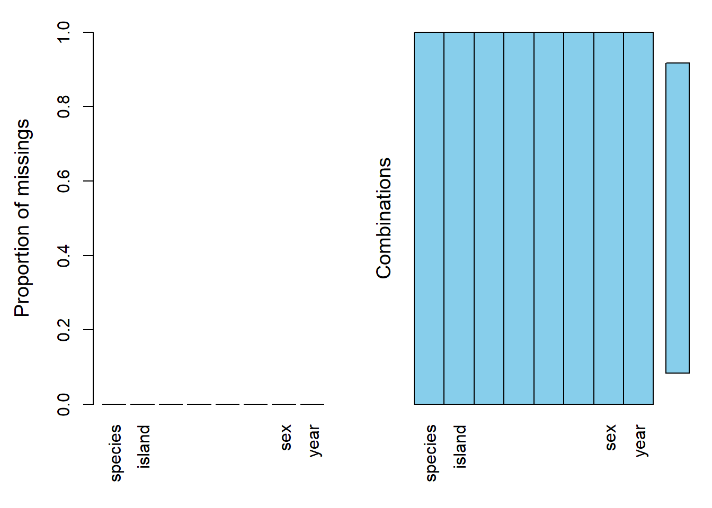
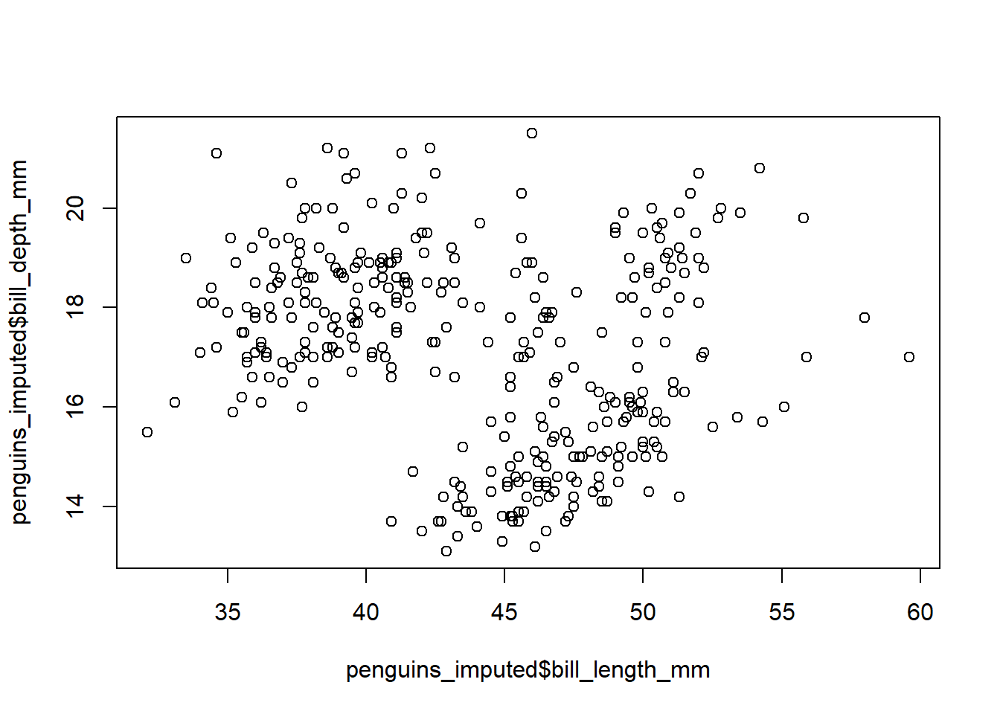
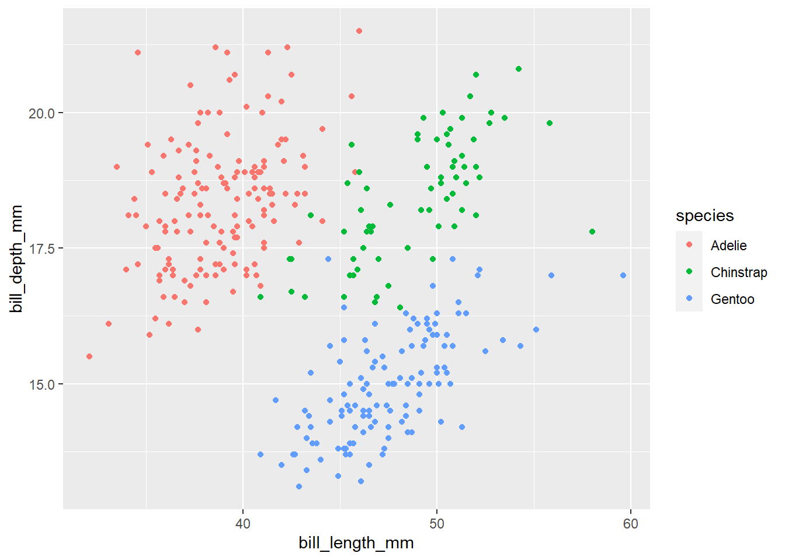
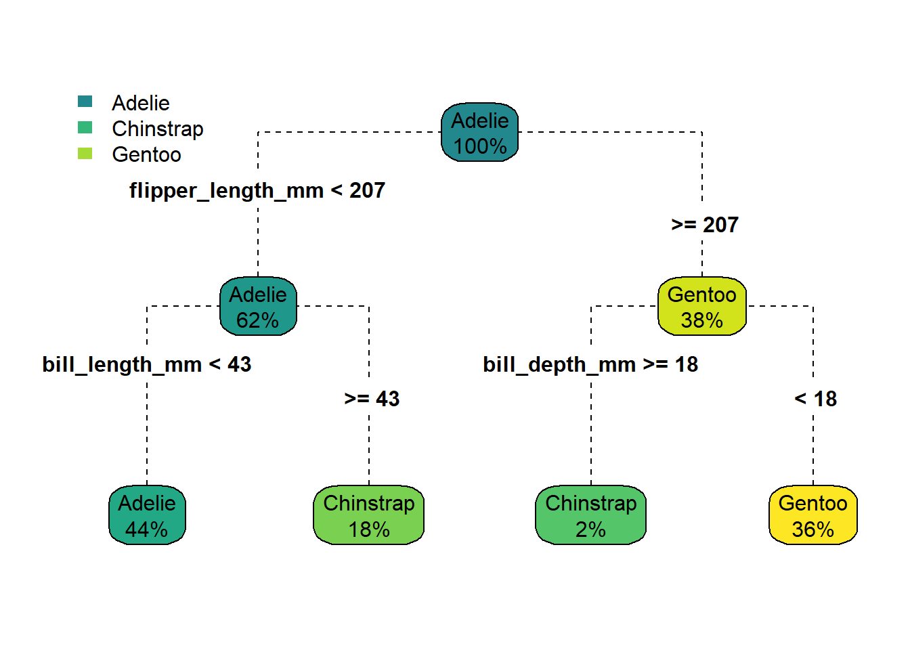
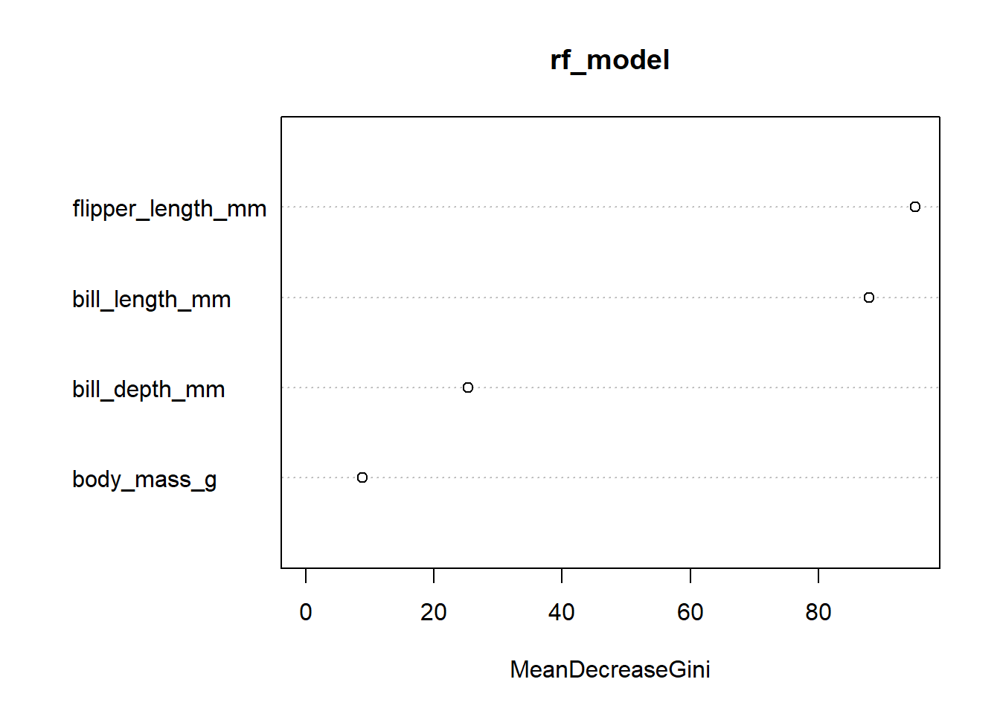

QZ #1
19 April (Wed) 13:00-15:00
Score distribution
summary(my_data) Class Score
Length:47 Min. : 8.00
Class :character 1st Qu.:21.50
Mode :character Median :29.00
Mean :29.11
3rd Qu.:39.00
Max. :45.00 Max score: 45 / 47
Min score: 8 / 47
AVG score: 29.11 / 47
Histogram
ggplot(my_data, aes(x = Score)) +
geom_histogram(binwidth = 3, color = "white", fill = "#56B4E9", alpha = 0.8) +
# Add vertical line for mean
geom_vline(aes(xintercept = mean(Score)),
color = "red", linetype = "dashed", linewidth = 1) +
geom_text(aes(x = 29.11, y = 6.5, label = "AVG: 29.11 / 47")) +
# Add x and y axis labels
labs(x = "Score", y = "Frequency",
title = "Score distribution") +
# Set a simple theme
theme_minimal()
Box-plot by classes
# Calculate average scores for each class
class_averages <- my_data %>%
group_by(Class) %>%
summarize(avg_score = mean(Score))
ggplot(my_data, aes(x = Class, y = Score, fill = Class)) +
geom_boxplot(alpha = 0.8, color = "black", size = 1) +
# Add individual data points with jitter
geom_jitter(alpha = 0.2) +
# Add text labels for average values
geom_text(data = class_averages,
aes(x = Class, y = 15,
label = paste0("Group AVG: ", round(avg_score, 1))),
color = "black",
size = 4,
fontface = "bold") +
# Remove legend
guides(fill = FALSE) +
# Choose color palette
scale_fill_manual(values = c("#E69F00", "#56B4E9")) +
# Add x and y axis labels
labs(x = "Class", y = "Score") +
# Set a simple theme
theme_minimal()
Date and Location
Date: 19 April (Wed) 13:00 - 15:00
Location: Room 312 (School of Communication, the same building)
Notice
- Quiz will be administered through Google Forms.
- Please bring your laptop for the quiz.
- You are allowed to access any information through the Internet
- However, communication with others is strictly prohibited.
- Do not use any messaging apps (e.g., KakaoTalk, TikTok, Line, WeChat, etc.) during the quiz.
- Upon completion of the quiz, you are required to submit your code.
Data
We are going to use a dataset named ‘penguins’ from the ‘palmerpenguins’ package. The dataset contains different body measurements for three species of penguins from three islands in the Palmer Archipelago, Antarctica. The penguins dataset is useful for learning R, because it contains multiple kinds of data (both categorical and numeric variables).
- Please see the link below if you want to know more about this data. https://allisonhorst.github.io/palmerpenguins/articles/intro.html
QZ
Part I. Data Import & Exploration
Let’s import “Palmerspenguins” data (Use the code below)
# Install palmerpenguins pacakge (if required)
if(!require(palmerpenguins)){
install.packages("palmerpenguins")
}Loading required package: palmerpenguins# import libraries
library(palmerpenguins)
library(tidyverse)
data(penguins)Let’s have a glimpse of the data
glimpse(penguins)Rows: 344
Columns: 8
$ species <fct> Adelie, Adelie, Adelie, Adelie, Adelie, Adelie, Adel…
$ island <fct> Torgersen, Torgersen, Torgersen, Torgersen, Torgerse…
$ bill_length_mm <dbl> 39.1, 39.5, 40.3, NA, 36.7, 39.3, 38.9, 39.2, 34.1, …
$ bill_depth_mm <dbl> 18.7, 17.4, 18.0, NA, 19.3, 20.6, 17.8, 19.6, 18.1, …
$ flipper_length_mm <int> 181, 186, 195, NA, 193, 190, 181, 195, 193, 190, 186…
$ body_mass_g <int> 3750, 3800, 3250, NA, 3450, 3650, 3625, 4675, 3475, …
$ sex <fct> male, female, female, NA, female, male, female, male…
$ year <int> 2007, 2007, 2007, 2007, 2007, 2007, 2007, 2007, 2007…The penguins dataset consists of 344 observations and the following 8 variables:
species: A factor with three levels - Adelie, Chinstrap, and Gentoo. These are the three penguin species under study.island: A factor with three levels - Biscoe, Dream, and Torgersen. These are the islands in the Palmer Archipelago where the penguins were observed.bill_length_mm: A numeric variable representing the length of the penguin’s culmen (bill) in millimeters.bill_depth_mm: A numeric variable representing the depth of the penguin’s culmen (bill) in millimeters.flipper_length_mm: A numeric variable representing the length of the penguin’s flipper in millimeters.body_mass_g: A numeric variable representing the penguin’s body mass in grams.sex: A factor with two levels - male and female.year: An integer variable representing the year of observation (2007, 2008, or 2009).
There are three species in palmerspenguins: Chinstrap / Gentoo / Adelie

The data table looks like ..
knitr::kable(penguins %>% head(10))| species | island | bill_length_mm | bill_depth_mm | flipper_length_mm | body_mass_g | sex | year |
|---|---|---|---|---|---|---|---|
| Adelie | Torgersen | 39.1 | 18.7 | 181 | 3750 | male | 2007 |
| Adelie | Torgersen | 39.5 | 17.4 | 186 | 3800 | female | 2007 |
| Adelie | Torgersen | 40.3 | 18.0 | 195 | 3250 | female | 2007 |
| Adelie | Torgersen | NA | NA | NA | NA | NA | 2007 |
| Adelie | Torgersen | 36.7 | 19.3 | 193 | 3450 | female | 2007 |
| Adelie | Torgersen | 39.3 | 20.6 | 190 | 3650 | male | 2007 |
| Adelie | Torgersen | 38.9 | 17.8 | 181 | 3625 | female | 2007 |
| Adelie | Torgersen | 39.2 | 19.6 | 195 | 4675 | male | 2007 |
| Adelie | Torgersen | 34.1 | 18.1 | 193 | 3475 | NA | 2007 |
| Adelie | Torgersen | 42.0 | 20.2 | 190 | 4250 | NA | 2007 |
# Glimpse of the penguins dataset.
glimpse(penguins)Rows: 344
Columns: 8
$ species <fct> Adelie, Adelie, Adelie, Adelie, Adelie, Adelie, Adel…
$ island <fct> Torgersen, Torgersen, Torgersen, Torgersen, Torgerse…
$ bill_length_mm <dbl> 39.1, 39.5, 40.3, NA, 36.7, 39.3, 38.9, 39.2, 34.1, …
$ bill_depth_mm <dbl> 18.7, 17.4, 18.0, NA, 19.3, 20.6, 17.8, 19.6, 18.1, …
$ flipper_length_mm <int> 181, 186, 195, NA, 193, 190, 181, 195, 193, 190, 186…
$ body_mass_g <int> 3750, 3800, 3250, NA, 3450, 3650, 3625, 4675, 3475, …
$ sex <fct> male, female, female, NA, female, male, female, male…
$ year <int> 2007, 2007, 2007, 2007, 2007, 2007, 2007, 2007, 2007…# 344 observations
# 8 vars
############################3
# EDA
############################3
summary(penguins) species island bill_length_mm bill_depth_mm
Adelie :152 Biscoe :168 Min. :32.10 Min. :13.10
Chinstrap: 68 Dream :124 1st Qu.:39.23 1st Qu.:15.60
Gentoo :124 Torgersen: 52 Median :44.45 Median :17.30
Mean :43.92 Mean :17.15
3rd Qu.:48.50 3rd Qu.:18.70
Max. :59.60 Max. :21.50
NA's :2 NA's :2
flipper_length_mm body_mass_g sex year
Min. :172.0 Min. :2700 female:165 Min. :2007
1st Qu.:190.0 1st Qu.:3550 male :168 1st Qu.:2007
Median :197.0 Median :4050 NA's : 11 Median :2008
Mean :200.9 Mean :4202 Mean :2008
3rd Qu.:213.0 3rd Qu.:4750 3rd Qu.:2009
Max. :231.0 Max. :6300 Max. :2009
NA's :2 NA's :2 table(penguins$year)
2007 2008 2009
110 114 120 table(penguins$sex)
female male
165 168 table(penguins$species)
Adelie Chinstrap Gentoo
152 68 124 table(penguins$island)
Biscoe Dream Torgersen
168 124 52 table(penguins$species, penguins$island)
Biscoe Dream Torgersen
Adelie 44 56 52
Chinstrap 0 68 0
Gentoo 124 0 0# All penguins in Torgersen island is 'Adelie'
table(penguins$sex, penguins$island)
Biscoe Dream Torgersen
female 80 61 24
male 83 62 23plot(penguins$bill_length_mm,
penguins$bill_depth_mm)
Part II. Data wrangling
#####
# missing values
library(VIM)Loading required package: colorspaceLoading required package: gridVIM is ready to use.Suggestions and bug-reports can be submitted at: https://github.com/statistikat/VIM/issues
Attaching package: 'VIM'The following object is masked from 'package:datasets':
sleepaggr(penguins)
# Variable with the most missing values: sex
sum(is.na(penguins$bill_length_mm))[1] 2sum(is.na(penguins$bill_depth_mm))[1] 2sum(is.na(penguins$flipper_length_mm))[1] 2sum(is.na(penguins$body_mass_g))[1] 2# Filter out when missings in 'bill_length_mm'
penguins %>%
filter(!is.na(bill_length_mm)) -> penguins_new
# Check the missing values again
aggr(penguins_new)
# Missing value handling with mice library and check again
library(mice)
Attaching package: 'mice'The following object is masked from 'package:stats':
filterThe following objects are masked from 'package:base':
cbind, rbindpenguins_new<-mice(penguins_new, method='rf', seed=1234)
iter imp variable
1 1 sex
1 2 sex
1 3 sex
1 4 sex
1 5 sex
2 1 sex
2 2 sex
2 3 sex
2 4 sex
2 5 sex
3 1 sex
3 2 sex
3 3 sex
3 4 sex
3 5 sex
4 1 sex
4 2 sex
4 3 sex
4 4 sex
4 5 sex
5 1 sex
5 2 sex
5 3 sex
5 4 sex
5 5 sexpenguins_imputed<-complete(penguins_new, 1)
aggr(penguins_imputed)
table(penguins$sex)
female male
165 168 table(penguins_imputed$sex)
female male
172 170 plot(penguins_imputed$bill_length_mm,
penguins_imputed$bill_depth_mm)
penguins_imputed %>% names[1] "species" "island" "bill_length_mm"
[4] "bill_depth_mm" "flipper_length_mm" "body_mass_g"
[7] "sex" "year" penguins_imputed %>%
ggplot() +
geom_point(aes(x=bill_length_mm, y=bill_depth_mm, color=species))
penguins_imputed %>%
group_by(sex) %>%
summarise(bill_len=mean(bill_length_mm),
bill_dep=mean(bill_depth_mm),
mass=mean(body_mass_g),
flipper_len=mean(flipper_length_mm)
)# A tibble: 2 × 5
sex bill_len bill_dep mass flipper_len
<fct> <dbl> <dbl> <dbl> <dbl>
1 female 42.0 16.4 3863. 197.
2 male 45.8 17.9 4545. 204.penguins_imputed %>%
group_by(island) %>%
summarise(bill_len=mean(bill_length_mm),
bill_dep=mean(bill_depth_mm),
mass=mean(body_mass_g),
flipper_len=mean(flipper_length_mm)
)# A tibble: 3 × 5
island bill_len bill_dep mass flipper_len
<fct> <dbl> <dbl> <dbl> <dbl>
1 Biscoe 45.3 15.9 4716. 210.
2 Dream 44.2 18.3 3713. 193.
3 Torgersen 39.0 18.4 3706. 191.penguins_imputed %>%
group_by(species) %>%
summarise(bill_len=mean(bill_length_mm),
bill_dep=mean(bill_depth_mm),
mass=mean(body_mass_g),
flipper_len=mean(flipper_length_mm)
)# A tibble: 3 × 5
species bill_len bill_dep mass flipper_len
<fct> <dbl> <dbl> <dbl> <dbl>
1 Adelie 38.8 18.3 3701. 190.
2 Chinstrap 48.8 18.4 3733. 196.
3 Gentoo 47.5 15.0 5076. 217.Part III. Train the model (Modeling)
############################
# Modeling
glimpse(penguins_imputed)Rows: 342
Columns: 8
$ species <fct> Adelie, Adelie, Adelie, Adelie, Adelie, Adelie, Adel…
$ island <fct> Torgersen, Torgersen, Torgersen, Torgersen, Torgerse…
$ bill_length_mm <dbl> 39.1, 39.5, 40.3, 36.7, 39.3, 38.9, 39.2, 34.1, 42.0…
$ bill_depth_mm <dbl> 18.7, 17.4, 18.0, 19.3, 20.6, 17.8, 19.6, 18.1, 20.2…
$ flipper_length_mm <int> 181, 186, 195, 193, 190, 181, 195, 193, 190, 186, 18…
$ body_mass_g <int> 3750, 3800, 3250, 3450, 3650, 3625, 4675, 3475, 4250…
$ sex <fct> male, female, female, female, male, female, male, fe…
$ year <int> 2007, 2007, 2007, 2007, 2007, 2007, 2007, 2007, 2007…table(penguins$species)
Adelie Chinstrap Gentoo
152 68 124 # 1. Decision Tree
penguins_imputed %>% select(-c("island", "sex", "year")) -> train
library(rpart)
dt_model<-rpart(species~., data = train, method = "class")
summary(dt_model)Call:
rpart(formula = species ~ ., data = train, method = "class")
n= 342
CP nsplit rel error xerror xstd
1 0.62827225 0 1.00000000 1.0000000 0.04807937
2 0.28272251 1 0.37172775 0.3769634 0.03947314
3 0.02617801 2 0.08900524 0.1151832 0.02375417
4 0.01000000 3 0.06282723 0.1204188 0.02425006
Variable importance
flipper_length_mm bill_length_mm bill_depth_mm body_mass_g
28 28 24 20
Node number 1: 342 observations, complexity param=0.6282723
predicted class=Adelie expected loss=0.5584795 P(node) =1
class counts: 151 68 123
probabilities: 0.442 0.199 0.360
left son=2 (213 obs) right son=3 (129 obs)
Primary splits:
flipper_length_mm < 206.5 to the left, improve=114.04630, (0 missing)
bill_length_mm < 42.35 to the left, improve=106.39810, (0 missing)
bill_depth_mm < 16.45 to the right, improve=100.54170, (0 missing)
body_mass_g < 4525 to the left, improve= 85.54889, (0 missing)
Surrogate splits:
bill_depth_mm < 16.35 to the right, agree=0.933, adj=0.822, (0 split)
body_mass_g < 4525 to the left, agree=0.906, adj=0.752, (0 split)
bill_length_mm < 43.25 to the left, agree=0.789, adj=0.442, (0 split)
Node number 2: 213 observations, complexity param=0.2827225
predicted class=Adelie expected loss=0.3004695 P(node) =0.622807
class counts: 149 63 1
probabilities: 0.700 0.296 0.005
left son=4 (150 obs) right son=5 (63 obs)
Primary splits:
bill_length_mm < 43.35 to the left, improve=71.131460, (0 missing)
flipper_length_mm < 192.5 to the left, improve= 9.130740, (0 missing)
body_mass_g < 3225 to the left, improve= 2.352691, (0 missing)
bill_depth_mm < 20.05 to the right, improve= 1.037547, (0 missing)
Surrogate splits:
flipper_length_mm < 195.5 to the left, agree=0.746, adj=0.143, (0 split)
Node number 3: 129 observations, complexity param=0.02617801
predicted class=Gentoo expected loss=0.05426357 P(node) =0.377193
class counts: 2 5 122
probabilities: 0.016 0.039 0.946
left son=6 (7 obs) right son=7 (122 obs)
Primary splits:
bill_depth_mm < 17.65 to the right, improve=10.5382100, (0 missing)
body_mass_g < 4325 to the left, improve= 3.4127400, (0 missing)
flipper_length_mm < 212.5 to the left, improve= 1.4479800, (0 missing)
bill_length_mm < 50.75 to the right, improve= 0.6684581, (0 missing)
Surrogate splits:
body_mass_g < 4050 to the left, agree=0.961, adj=0.286, (0 split)
Node number 4: 150 observations
predicted class=Adelie expected loss=0.03333333 P(node) =0.4385965
class counts: 145 5 0
probabilities: 0.967 0.033 0.000
Node number 5: 63 observations
predicted class=Chinstrap expected loss=0.07936508 P(node) =0.1842105
class counts: 4 58 1
probabilities: 0.063 0.921 0.016
Node number 6: 7 observations
predicted class=Chinstrap expected loss=0.2857143 P(node) =0.02046784
class counts: 2 5 0
probabilities: 0.286 0.714 0.000
Node number 7: 122 observations
predicted class=Gentoo expected loss=0 P(node) =0.3567251
class counts: 0 0 122
probabilities: 0.000 0.000 1.000 library(rpart.plot)
rpart.plot(dt_model, type=4, extra=100, box.palette ="-YlGnBl", branch.lty = 2)
predict(dt_model, penguins_imputed[104,]) Adelie Chinstrap Gentoo
104 0.9666667 0.03333333 0# 2. Random Forest
library(randomForest)randomForest 4.7-1.1Type rfNews() to see new features/changes/bug fixes.
Attaching package: 'randomForest'The following object is masked from 'package:dplyr':
combineThe following object is masked from 'package:ggplot2':
marginrf_model <- randomForest(species~.,
data = train,
mtry = 3,
ntree = 200)
rf_model
Call:
randomForest(formula = species ~ ., data = train, mtry = 3, ntree = 200)
Type of random forest: classification
Number of trees: 200
No. of variables tried at each split: 3
OOB estimate of error rate: 2.92%
Confusion matrix:
Adelie Chinstrap Gentoo class.error
Adelie 146 4 1 0.033112583
Chinstrap 4 64 0 0.058823529
Gentoo 0 1 122 0.008130081varImpPlot(rf_model)
# 3. Naive Bayes
library(naivebayes)naivebayes 0.9.7 loadednb_model <- naive_bayes(species ~ ., data=train)
summary(nb_model)
================================== Naive Bayes ==================================
- Call: naive_bayes.formula(formula = species ~ ., data = train)
- Laplace: 0
- Classes: 3
- Samples: 342
- Features: 4
- Conditional distributions:
- Gaussian: 4
- Prior probabilities:
- Adelie: 0.4415
- Chinstrap: 0.1988
- Gentoo: 0.3596
--------------------------------------------------------------------------------- table(train$species)
Adelie Chinstrap Gentoo
151 68 123 # 4. kNN
# Normalization
nor <- function(x) { (x - min(x)) / (max(x) - min(x)) }
train %>% mutate(bill_length_mm=nor(bill_length_mm),
bill_depth_mm=nor(bill_depth_mm),
flipper_length_mm=nor(flipper_length_mm),
body_mass_g=nor(body_mass_g)) %>%
select(-species)-> train_nor
head(train_nor) bill_length_mm bill_depth_mm flipper_length_mm body_mass_g
1 0.2545455 0.6666667 0.1525424 0.2916667
2 0.2690909 0.5119048 0.2372881 0.3055556
3 0.2981818 0.5833333 0.3898305 0.1527778
4 0.1672727 0.7380952 0.3559322 0.2083333
5 0.2618182 0.8928571 0.3050847 0.2638889
6 0.2472727 0.5595238 0.1525424 0.2569444library(class)
kn_model <- knn(train_nor,
train_nor[101:120,],
cl=train$species, k=13)
tab <- table(kn_model,train[101:120,"species"])
tab
kn_model Adelie Chinstrap Gentoo
Adelie 20 0 0
Chinstrap 0 0 0
Gentoo 0 0 0Part IV. Model score & Prediction
######################
# Score & Prediction
# create a train dataset
test <- train[seq(1,300,3),]
# Prediction by using trained models
pred_dt <- predict(dt_model, test, type='class')
pred_rf <- predict(rf_model, test, type='class')
pred_nb <- predict(nb_model, test, type='class')Warning: predict.naive_bayes(): more features in the newdata are provided as
there are probability tables in the object. Calculation is performed based on
features to be found in the tables.pred_kn <- knn(train_nor, train_nor[seq(1,300,3),], cl=train$species, k=13)
data.frame(truth=train[seq(1,300,3),"species"],
dt=pred_dt,
rf=pred_rf,
nb=pred_nb,
kn=pred_kn) %>%
mutate(dt=ifelse(dt==truth, 1, 0),
rf=ifelse(rf==truth, 1, 0),
nb=ifelse(nb==truth, 1, 0),
kn=ifelse(kn==truth, 1, 0)) -> score
apply(score[-1], 2, sum) dt rf nb kn
95 100 96 98 score %>%
mutate(ts=dt+rf+nb+kn) %>%
mutate(low=ifelse(ts==1, 1, 0)) %>%
filter(low==1) truth dt rf nb kn ts low
295 Chinstrap 0 1 0 0 1 1penguins_imputed[295,] species island bill_length_mm bill_depth_mm flipper_length_mm body_mass_g
295 Chinstrap Dream 42.4 17.3 181 3600
sex year
295 female 2007